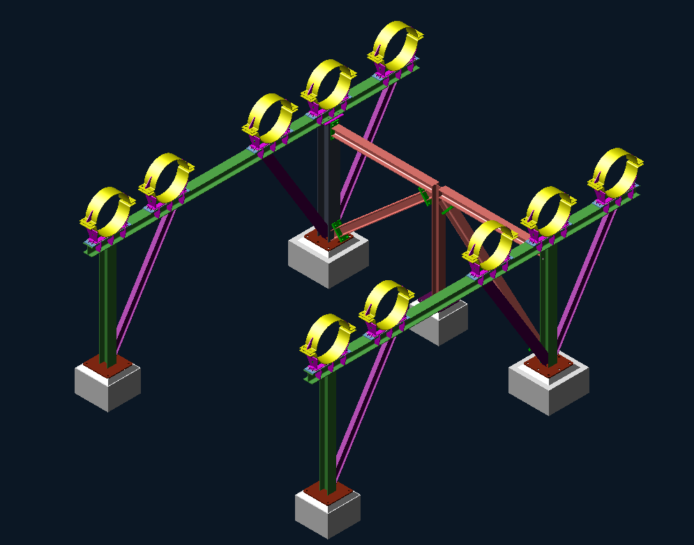
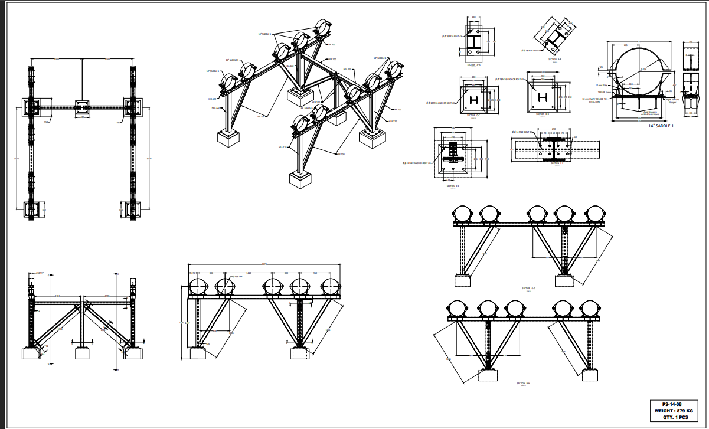
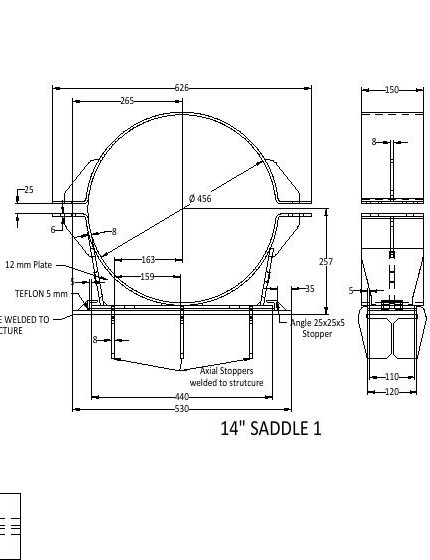

Modeling and Shop Drawing of a Pipe Support for Five 14-Inch Headers
Detailed modeling and fabrication documentation of a multi-bay structural support developed to carry and coordinate five parallel 14-inch piping headers.

Project overview
This project covered the three-dimensional modeling and shop-drawing development of a structural pipe-support assembly carrying five parallel 14-inch headers. The coordinated model establishes the pipe elevations and spacing while integrating the supporting steel frames, longitudinal members, diagonal bracing, saddles, base plates, anchor-bolt arrangements, and concrete foundations.
Modeling and drawing scope
- Model the complete multi-bay steel support and coordinate it with five 14-inch piping headers.
- Develop the primary columns, transverse and longitudinal members, and diagonal bracing arrangement.
- Coordinate the individual pipe saddles, clamps, sliding interfaces, and axial stoppers.
- Prepare plan, elevation, isometric, and sectional views of the complete support assembly.
- Detail base plates, anchor-bolt layouts, bolted member connections, and local attachment geometry.
- Document the 14-inch saddle fabrication, including plate geometry, PTFE interface, and welded stoppers.
- Compile the coordinated fabrication information into a single A0 shop-drawing sheet.
Shop-drawing documentation
The engineering drawing package includes the complete arrangement and detail drawings, incorporating title blocks, dimensional callouts, member schedules, cross-sections, baseplate details, and 14-inch saddle fabrication geometry.
Engineering outcome
The completed documentation provides a coordinated connection between the piping arrangement and its supporting steelwork. The model clarifies the five-header layout, while the drawing communicates the member geometry, support elevations, bracing, base interfaces, anchor arrangements, and pipe-restraint details required for fabrication and installation review.
Project gallery


